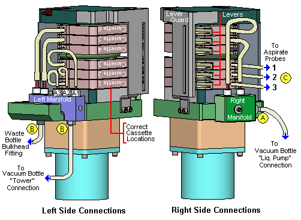
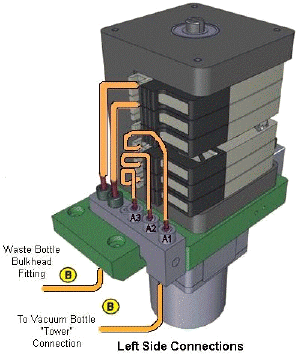
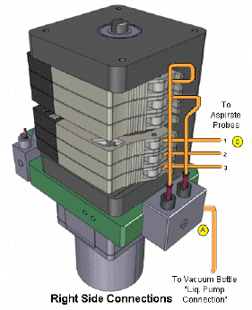

Replacing Peristaltic Pump
Refer to these drawings while performing this procedure.
Note: Mod 11102 Peristaltic Pump Cassette - Replace implements newer style peri-pump cassettes.
Identify the particle wash aspirate pumps by the cassette type:
- The old style pump has white cassettes with red tabs. The pump has a lever guard.
- The new style pump has beige cassettes with black tabs. The pump no longer has a lever guard or a cassette numbering sequence. The cassettes are installed with the black tabs on the left and the springs on the right.



-
Remove the peristaltic pump.
-
Install the peristaltic pump.
-
Verify the peristaltic pump operation.
- Cycle the peristaltic pump on and off and confirm that it rotates. From the Main Menu, select .
-
Verify system operation.